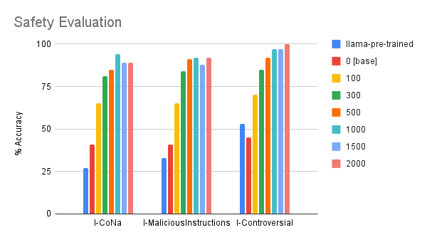
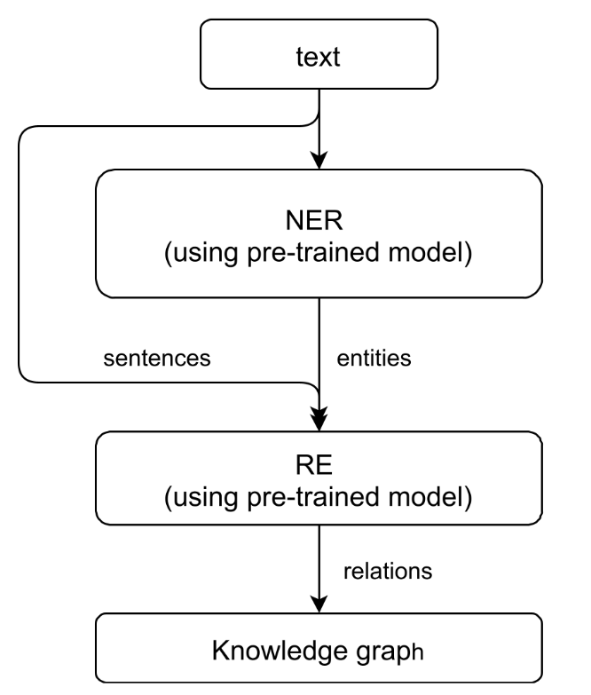
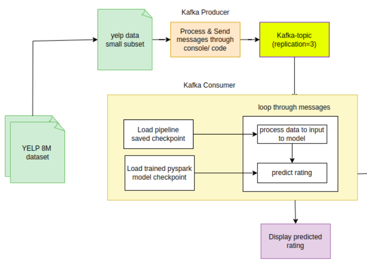
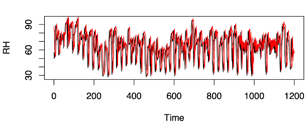

{kind=link}
I am currently pursuing a Master's in Computer Science at UMass Amherst , prior to this, I graduated from IIT Dhanbad, With a strong foundation in advanced courses such as Advanced NLP, Deep Learning, and Reinforcement Learning, my academic journey has been complemented by practical experience as a Analyst at Morgan Stanley and multiple internships.
I'm a math and ML enthusiast interested in working on challenging problems. My expertise spans Python, NLP and large language models (LLMs). As a graduate student researcher at Meta, I contributed to devising quantifiable metrics to measure bias in image generative models. I am actively seeking for Full-time / Co-ops roles in Quant, Fin-tech startups, LLM-related roles, where I can leverage my comprehensive skills and experience.
Please feel free to reach out if we share any interests! also, happy to chat about anything computer science,
books, quant, etc. you can email me at my personal email
sureddyakshay@gmail.com.
Jun 2024 -- Aug 2024
Summer Associate Quantitative Finance
New York, USA
- Part of Securities Lending desk of Prime Brokerage division.
- Developed a Q-based inventory management tool to monitor and analyze $11 Billion USD in retail lendable inventory, enabling traders to assess PnL impact from lending to hedge funds.
- Developed analytics tools and metrics to assist traders and sales teams in gaining insights, boosting revenue by 5%.
Feb 2024 -- Present
Graduate Student Researcher
[arXiv], Remote, USA
- Innovated an evaluation method to measure geographical biases in text-to-image models like Stable Diffusion and DALLE, enhancing precision and diversity with decoupled representations from Segment-Anything.
- Developed PatchViT, a novel technique for selecting relevant image patches, boosting feature extraction in Vision Transformer (ViT) models, outperforming standard ViT and CNN methods.
- Analyzed metric trends across regions, improving understanding of model performance under diverse prompts, and applied CLIP Zero Shot classification to real and generated datasets to assess regional biases.
- Awarded "Outstanding Paper" at the Trustworthy Multi-modal Foundation Models Workshop, ICML 2024.
Jul 2021 -- Jul 2023
Full-time: Quant & ML Associate, Macrodatastrats - Interest Rate Strategies
Mumbai, India
- Implemented a Retrieval Augmented Generation (RAG) based Q&A chatbot using LLMs and a vector DB to answer natural language questions on 200+ complex datasets, saving the data team 10+ hours weekly.
- Enhanced LLM response accuracy by 10% through Chain of Thought & few-shot Prompting techniques.
- Built an end-to-end tool to approximate the joint probability surface of exchange rates using Neural Networks, reducing model runtime by 80%, and achieving an MAE of 0.02%.
- Developed a Scala and Python-based library to construct time series data of portfolios and backtest various ML and trading strategies, currently used by 50+ researchers and quants.
- Main contributor in developing an end-to-end framework for FRTB, a regulatory requirement calculation for Interest Rate instruments like Swaps, Swaptions, and FX options.
- Built an end-to-end web-based tool in Python and Angular to monitor, track, and alert on thousands of failed quality checks on datasets weekly, currently used by 50+ teams.
Jun 2020 -- Jul 2020
Summer Internship in Software Engineering
Hyderabad, India
- Developed an end-to-end application to track and predict the position of various aircraft.
- Connected to Iridium services mailbox to receive real-time position reports for flights as an email service. Decrypted and decoded attachments to get the aircraft's position reports in Java.
- Ingested position reports into a Kafka topic and aggregated using Kafka Streams. Finally, dumped the data into a Database and created APIs to access the position reports.
- Developed a position prediction algorithm to predict the aircraft's position. Used a Regression model on previous positions and employed SGD to update the algorithm in real-time. Changed the pull-based mechanism (APIs) to a push-based mechanism using web sockets.
- As a Scrum Master, led a team of 9 interns, followed the Agile framework, split the team into 5 modules, and organized daily stand-ups and weekly integrated demos.
May 2019 -- Jul 2019
Summer Internship in Machine Learning
Chennai, India
- Developed a novel ML model to predict cricket scores at any point of the match. Achieved an MAE (Maximum Absolute Error) of 32 runs in the 25th over prediction with a bias of 4 runs. The prediction was an ensemble of an analytical and Kernel Ridge Regression model.
- Developed an optimization toolbox (including UI) using a stochastic sampling method. Implemented Genetic Algorithms and multi-objective evolutionary algorithms to return Pareto front solutions and capture multi-optimal solutions in a single run. This toolbox was used for hyperparameter tuning of various Machine Learning models.
Dec 2018 -- Jan 2019
Winter Internship in Software Development
Chennai, India
- Worked on ideating and developing the early version of an Augmented Reality application for visualizing educational concepts for primary and secondary school students.
- The application is currently being used by 10+ schools to teach concepts using Augmented Reality techniques.

|
CGPA: 4.0 / 4.0
|

|
|

LLM Alignment Towards Safety and Helpfulness
Feb 2024 -- Jun 2024
Guide: Dr. Mohit Iyyer
- Successfully improved the alignment and safety of the LLaMA-2-7B language model by 40%. This was achieved through a combination of techniques, including Supervised Fine-Tuning (SFT), Reward Ranked Fine Tuning (RAFT), Direct Preference Optimization (DPO), and knowledge distillation. These methods were meticulously integrated to align the model's outputs with human values and ethical considerations while ensuring that the model adheres to safety guidelines, reducing the risk of harmful or biased outputs.
- Employed Parameter Efficient Fine-Tuning(PEFT) methods like Low Rank Adaptation (LoRA) and QLoRA to fine-tune LLMs with less than 0.5% of total parameters.
- Implemented novel evaluation tasks like LLM as a Judge with sub-claim recall to evaluate model alignment, Curated one word answer questions to evaluate exact string match recall, Helpfulness MCQs and Safety MCQs .

Deep RL Algorithms Implementation
Oct 2023 -- Dec 2023
- Implemented Reinforce with baseline, Semi-Gradient N-step SARSA, and Deep Q-Learning algorithms.
- Incorporated neural networks for policy and value functions.
- Conducted comprehensive evaluations of these algorithms on Cartpole, Acrobot, and custom Autonomous toy car environments, performing in-depth analysis.

Leapp.ai: Customized Learning Plan Generation using AI
Jun 2023 -- Oct 2023
Product link: https://www.producthunt.com/products/leapp-ai
- Created Leapp, a comprehensive web tool using advanced tech to facilitate personalized user learning plans.
- Implemented features like content streaming, collaborative sharing, and exploring public learning plans.
- Used prompt engineering to boost ChatGPT's output quality, elevating user satisfaction and engagement.
- Attained impressive user adoption: 10,000+ users, 1000+ learning plans, within 2 months of initial launch.
- Consistently gathered user feedback, iterated features for enhanced experience, and fueled growth.
- Skills: Quart (Asyncio version of Flask, Python), Angular, ChatGPT, AWS (DynamoDb, LightSail, Cognito)

Knibble.ai: Question Answering Chatbot on Custom Knowledge Base
Mar 2023 -- Jul 2023
Product link: https://www.producthunt.com/products/knibble-ai
- Developed Knibble, an innovative generative AI-based web tool to create a chatbot on a custom knowledge base.
- Enabled seamless processing of diverse document formats (PDFs, URLs, text files) into a vector DB.
- Utilized Langchain for efficient text analysis, resulting in optimized chatbot performance and course content.
- Implemented an embeddable chatbot for websites, Notion pages, and web crawlers, thus enhancing user engagement.
- Achieved 1000+ users in 2 months, gaining recognition as a top 1% tool for App Sumo Select Class of 2023.

Network Topology Reconstruction
Mar 2020 -- Jul 2021
Guide: Dr. Nirav P Bhatt, Master's thesis
- Used text mining techniques to identify the entities and determine the relation between them.
- Generated a Pre-train dataset consisting of 20 million sentences by parsing 2M PubMed abstracts.
- Finetuned BioBert and BERT on the generated data and used it for NER and Relation Extraction tasks on various datasets like NCBI, GAD, DDI, BioRelEx, BioInfer.
- Ideated and developed the pipeline to generate a knowledge graph from the given text articles.

Realtime Movie Rating Prediction
Jan 2020 -- May 2020
Guide: Prof. Balaraman Ravindran, Course: Big Data Laboratory
- Devised pipeline to predict movie ratings on a real-time basis, by training on YELP (8M reviews) on GCP cluster.
- Achieved 70% accuracy using only review text (vector-space + NB classifier) in PySpark.
- Used the trained model to do real-time predictions on data streamed through a Kafka topic.

Fuzzy Time-Series Modelling
Oct 2019 -- Nov 2019
Guide: Prof. Arun K Tangirala, Course: Applied Time Series Analysis
- Implemented a forecasting algorithm to predict Relative Humidity using a fuzzy time-series model. The data is from an Automated Weather Station at Sriharikota from May 15 - Jul 07, 2009, with hourly frequency.
- Data set comprises measurements of many meteorological variables, such as air temperature and wind speed.
- Achieved an MAE of 2.5% when forecasted for the subsequent 4 days (96 points).
- Compared it with a linear SARIMA model using air temperature as an exogenous variable.
Awards and Achievements
| Secured All India Rank of 1732 in JEE Advanced 2016 out of 200 thousand candidates (Top 0.8%). |
| Secured All India Rank of 784 in JEE Mains 2016 out of 1.3 million students (Top 0.06%). |
| Selected provisionally for KVPY fellowship award among 100 thousand applicants (Top 1%). |
| Secured Rank of 10 in Andhra Pradesh State Mathematical Olympiad 2012 among 100k applicants (Top 0.01%). |